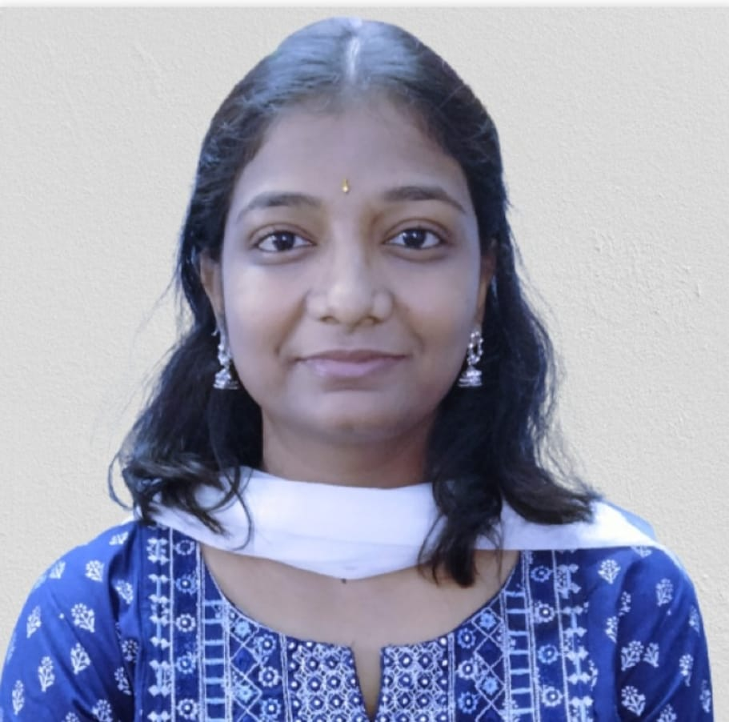

Hello there!
I am Roopasri, born and brought up in Hyderabad, India. I have 4.5 years of technical experience in software analysis, design, development, documentation, implementation, and testing, primarily using Java and Spring Boot. I possess strong Object-Oriented programming skills and have experience with DevOps practices, including creating release pipelines and managing version updates. I am proficient in creating technical documentation using Confluence for APIs they have developed. I have experience with version control tools like GIT and Bitbucket, as well as Continuous Integration tools like Jenkins and SonarQube.
I am Roopasri, born and brought up in Hyderabad, India. I have 4.5 years of technical experience in software analysis, design, development, documentation, implementation, and testing, primarily using Java and Spring Boot. I possess strong Object-Oriented programming skills and have experience with DevOps practices, including creating release pipelines and managing version updates. I am proficient in creating technical documentation using Confluence for APIs they have developed. I have experience with version control tools like GIT and Bitbucket, as well as Continuous Integration tools like Jenkins and SonarQube.